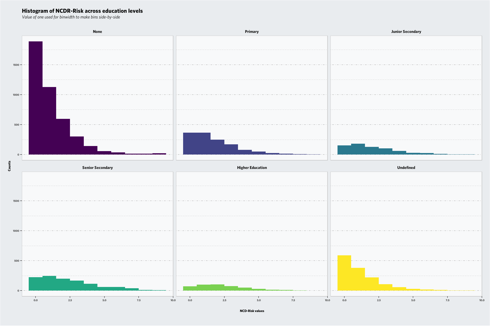
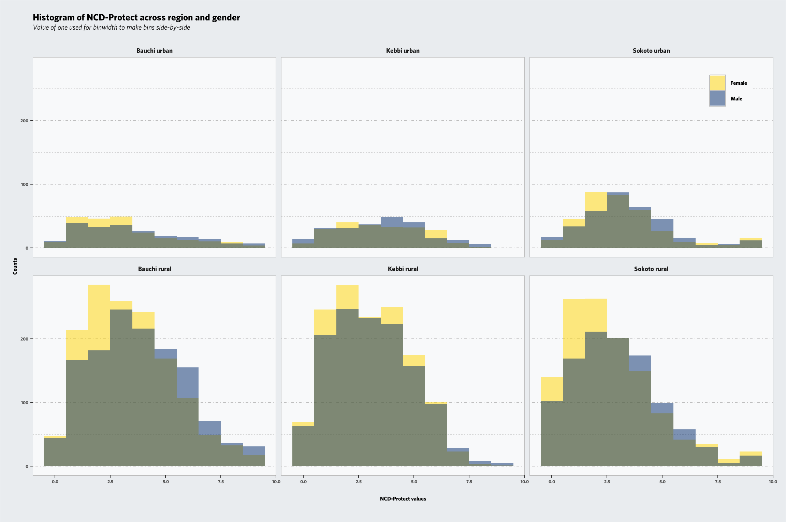

This document explains the detailed analysis of Nigeria DQQ survey data. Nigeria DQQ survey study was conducted to address some of the gaps in diet quality data in Nigeria, by assessing diet quality at state level using the DQQ. The specific objectives of the study were to: 1. Measure MDD-W, NCDs-Protect, NCDs-Risk, and GDR scores, and All-5 at state level using the DQQ02 and describe state level diet quality. 2. Compare diet quality of men and women and of urban and rural dwellers. 3. Determine food access at state level.
A quick look into the metadata
Let’s jump straight into the analysis workflow for survey data in R environment. We can use functions from R packages sjPlot, surveytoolbox, and labelled to explore and extract information from the SPSS, SAS and STATA data files. Specifically, view_df function from sjPlot is a quick and efficient way to overview variable ID number, name, label, type and associated value labels.
First, we need to load all required libraries into our working environment in R
Not working and didn't work in last 12 months
Professional, Technical and Related Workers
Administrative and Managerial Workers
Office and Administrative support workers
Sales and Related Workers
Service Workers
Installations, Maintenance and Repair Workers
Craft and related trade workers
Agricultural, Animal Husbandry, and Forestry Workers, Fishermen and Hunters
Production, Construction and Extractions Workers
Elementary occupations
Others (Specify)
Don’t know
2
i3
Highest Level of school completed
1
2
3
4
5
98
99
None
Primary
Junior Secondary School
Senior Secondary School
Higher / university/ college
Others (Specify)
DON’T KNOW
Data cleaning and preparation
The first data cleaning step is to change some names in DQQ variables and make them easier to use for further analysis. Arbitrary function varname is created to manipulate only main DQQ variables’ names.
Two core R functions are employed for calculation of food groups. These are case_when function from dplyr to distinguishes between yes and no answers, and ifelse base R for cases when a cumulative score should be evaluated against a threshold (For instance, for MDD-W and its threshold on DDS = 5)
When reading a data set using haven, variables have labels and other metadata attached as attributes. If a variable contains labelled values it will be imported as a haven_labelled vector, which stores the variable labels in the labels attribute. First use class and head functions to see value labels and then check for any missing values in i3 and i4 which are job and education classification variables.
Than we can use add_labels from sjlabelled package to replace value labels with shorter ones, and then factorizing and ordering them based on their original order.
Code
```{r}#| output: false#| code-fold: true#| warning: false# Checking format and value labelsclass(d$i4)head(d$i4)# Check for missing valuesd %>%count(i4, is.na(i4)) # job sector d %>%count(i3, is.na(i3)) # level of education# There is an undefined value in education level. table(labelled::to_factor(d$i3))#Lets call it undefined category for now.d$i3 <- sjlabelled::add_labels(d$i3, labels =c(`Junior Secondary`=3,`Senior Secondary`=4,`Higher Education`=5,`Undefined`=6) )d$i4 <- sjlabelled::add_labels( d$i4, labels =c("Not working"=1,"Professional and Technical"=2,"Administrative and Managerial"=3,"Office and Admin"=4,"Sales"=5,"Service"=6,"Installations and Maintenance"=7 ,"Craft and Trade"=8,"Agriculture and Fishery"=9, "Production and Construction"=10,"Elementary"=11,"Others"=12,"Don’t know"=13 ))# Convert to factors, using the labels as levels# Labels that don’t exist in the data can be dropped from the levels using drop_unused_labels = TRUE.d$job <- labelled::to_factor(d$i4, levels ="labels", ordered =TRUE, sort_levels ='none', decreasing =FALSE, drop_unused_labels =TRUE)d$edu <- labelled::to_factor(d$i3, levels ="labels", ordered =TRUE, sort_levels ='none', decreasing =FALSE, drop_unused_labels =TRUE)d$reg <- labelled::to_factor(d$strata, levels ="labels", ordered =TRUE, sort_levels ='none', decreasing =FALSE, drop_unused_labels =TRUE)table(d$edu)# Other ways also workgender <-fct_collapse(as.factor(d$gender), "Male"="1", "Female"="0")d$gender <- genderd$Residence <-ifelse(d$sector ==1, "Urban", ifelse(d$sector ==2, "Rural", NA)) ```
Complex survey design
Here survey R package is used to create complex design objects based on weights provided by GALLUP.
Lets try first exploring the distribution of a food group, for instance NCD-Risk, across two factors, education level and job categories. We set font options for output graphs using showtext package and Whitney font face which has been preferred font for previous DQQ-based graphs.
In below graphs distributions of NCD_Risk and NCD-Protect are illustrated using ggplot2 package. Categorical variables are useful for adding extra information on how data distributed, for instance across education, job, region and gender.
Code
```{r, fig.width= 12, fig.height= 8, dpi= 96}#| fig-cap: "Distrubution of NCD-Risk"#| code-fold: true#| warning: falsed %>%filter(!is.na(edu)) %>%ggplot(aes(x = ncdr, fill = edu)) +geom_histogram(binwidth =1) +guides(fill ="none") +facet_wrap(~edu) +labs(x ="NCD-Risk values",y ="Counts",title ="Histogram of NCDR-Risk across education levels", subtitle ="Value of one used for binwidth to make bins side-by-side",caption ="" ) +theme(plot.background =element_rect(fill ="#e9ecef"), plot.title =element_text(family ="Whitney", face ="bold", size =20, margin =margin(t =0.05, unit ="cm")),plot.subtitle =element_text(family ="Whitney", face ="italic", size =16, margin =margin(b =0.5, t =0.1, unit ="cm")),panel.background =element_rect(fill ="#f8f9fa", colour ="gray"), panel.grid =element_blank(),panel.grid.minor.y =element_line(colour ="gray", linetype =2),panel.grid.major.y =element_line(colour ="gray", linetype =4),axis.title =element_text(family ="Whitney", face ="bold", size =12),axis.text =element_text(family ="Whitney", face ="bold", size =10),axis.title.x =element_text(family ="Whitney", face ="bold", size =12, margin =margin(t =0.5, unit ="cm")),strip.background =element_rect(fill ="#e9ecef"),strip.text =element_text(family ="Whitney", face="bold", size =14),plot.margin =margin(t =0.5, r =0.5, b =0.5, l =0.5, unit ="cm") )```

Distrubution of NCD-Risk
Code
```{r, fig.width= 12, fig.height= 8, dpi= 96}#| fig-cap: "Distrubution of NCD-Protect"#| code-fold: true#| warning: false# NCD-Protect on gender and regionsd %>%ggplot(aes(x = ncdp, fill = gender)) +geom_histogram(binwidth =1, position ="identity", alpha =0.5 ) +scale_fill_manual(values =c("Male"="#00296b", "Female"="#ffd500" ) ) +#guides(fill = "none") +facet_wrap(~ reg, nrow =2, ncol =3, dir ="v") +labs(x ="NCD-Protect values",y ="Counts",title ="Histogram of NCD-Protect across region and gender", subtitle ="Value of one used for binwidth to make bins side-by-side",caption ="" ) +theme(plot.background =element_rect(fill ="#e9ecef"), plot.title =element_text(family ="Whitney", face ="bold", size =20, margin =margin(t =0.05, unit ="cm")),plot.subtitle =element_text(family ="Whitney", face ="italic", size =16, margin =margin(b =0.5, t =0.1, unit ="cm")),panel.background =element_rect(fill ="#f8f9fa", colour ="gray"), panel.grid =element_blank(),panel.grid.minor.y =element_line(colour ="gray", linetype =2),panel.grid.major.y =element_line(colour ="gray", linetype =4),axis.title =element_text(family ="Whitney", face ="bold", size =12),axis.text =element_text(family ="Whitney", face ="bold", size =10),axis.title.x =element_text(family ="Whitney", face ="bold", size =12, margin =margin(t =0.5, unit ="cm")),legend.title =element_blank(),legend.position =c(0.94, 0.92),legend.text =element_text(family ="Whitney", face ="bold", size =12),legend.background =element_rect(fill ="#f8f9fa"), strip.background =element_rect(fill ="#e9ecef"),strip.text =element_text(family ="Whitney", face="bold", size =14),plot.margin =margin(t =0.5, r =0.5, b =0.5, l =0.5, unit ="cm") )```

Distrubution of NCD-Protect
We can use results of complex design objects to explore estimated population information based on weighted stratified data. The principal difficulty in designing graphics for complex survey data is representing the sampling weights. Three strategies could be used to overcome this difficulty: 1. Base the graph on an estimated population distribution. 2. Explicitly indicate weights on the graph. 3. Draw a simple random sample from the estimated population distribution and graph this sample instead. Here We start off by extracting some information on mean population estimates NCD_Risk from svyby which compute survey statistics on subsets of a survey defined by factor (education and job). d_w is used as the svydesign object which was defined in previous sections.
We can use simple barplot function directly like the first plot, but it would be more effective to retrieve information and save it as data.frame and use ggplot functionality for graphing purposes.
Code
```{r, fig.width= 12, fig.height= 8, dpi= 96}#| fig-cap: "Population estimates for male and female"#| code-fold: true#| warning: falsebarplot(svymean(~gender, d_w))```
![]()